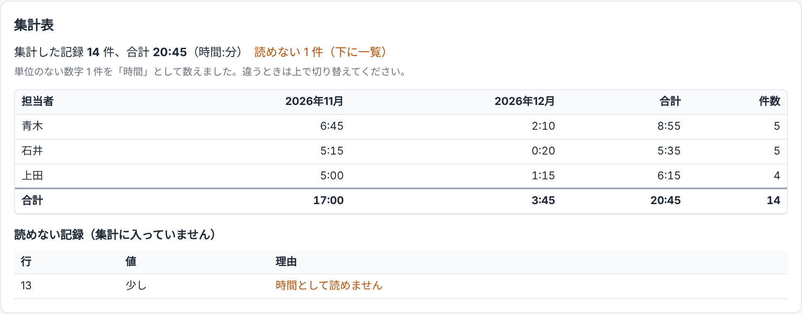

作業時間の集計
作業記録の時間が「1:30」「90分」「1.5h」「1時間半」のように人によって書き方がばらばらでも、分にそろえて、担当者ごと・案件ごと・月ごとに合計するツールです。Excel で SUM をしても合わない、文字の「90分」が足されない、24時間を超えると「1:30」に戻ってしまう、といった手直しがいりません。ソフトのインストールは不要で、いつものブラウザで動きます。
500円（税込・買い切り）
お試し版はすべての機能を使えて、集計・印刷・保存は先頭30行までです。決済が終わると、そのまま製品版の画面に移動します。ブックマークしておけば何度でも使えます。

見本のデータ（書き方がまざった15件）を担当者×月で集計した例。名前・案件は説明のための架空のものです。
こんなときに
- チームの作業記録（日報・工数表）を月末に集めると、「1:30」「90分」「1.5」が入りまじっていて、そのままでは合計できない
- 案件ごとの作業時間を出して、見積もりの見直しや請求の確認に使いたい
- 開始・終了の時刻だけ書いてある記録から、休憩を引いた時間を出したい（夜をまたぐ作業も）
- どの記録が読めずに抜けているのかを、行の番号つきで確かめたい
できること
- いろいろな書き方を読む：「1:30」「1:30:00」「25:10」「90分」「45min」「1.5h」「1.5時間」「2時間」「1時間半」「1時間30分」「1h30m」。全角の数字も読めます。単位のない数字（「1.5」「90」）を時間とみなすか分とみなすかは選べます
- 開始・終了から計算：「9:00」「9時半」「午後1時」「0930」などの時刻から時間を出し、休憩の列があれば引きます。終了が開始より前なら日をまたいだとみなせます
- 分けて合計：表の行と列に、担当者・案件など好きな列や、日付の「月ごと」「日ごと」「曜日ごと」を選べます（例：担当者×月、案件×担当者）。行と列の合計・件数も出します
- 読めない記録の一覧：「少し」「1:75」のように読めない値は、行の番号と理由つきで一覧にし、合計には入れません。空欄は数えません
- 丸め：必要なら、記録1件ずつを 5分・15分・30分などの単位で切り捨て・切り上げ・四捨五入してから合計できます
- 表示と保存：「25:30」「25.50（時間）」「1530（分）」から選べます。集計表は A4 で印刷、集計表と明細（1件ずつの分を足した表）は CSV で保存できます
- CSV（UTF-8・Shift_JIS）と Excel ファイル（.xlsx）を読めます。Excel の表をコピーして貼り付けても使えます
できないこと（購入前にご確認ください）
- 給与・残業代・請求金額の計算はしません。深夜・休日などの区分や、労働時間の決まりに合っているかの判断もしません。時間を読んで合計するところまでです
- 「1時30分」のような書き方は、時刻と区別できないため読めない記録として一覧に出します（「1時間30分」は読めます）
- 1つのセルに「9:00-12:00」のように開始と終了が一緒に書いてある記録は読めません。開始と終了を別の列にしてください
- ファイルの中身を書き換えることはしません。結果は新しい CSV として保存します
- スマートフォンでは操作しにくいため、パソコンでお使いください
Excel だけで合計するなら
時間がすべて「1:30」の形で入っているなら、Excel で足せます。=SUM(D2:D100) の結果のセルを、表示形式「ユーザー定義」で [h]:mm にしてください（ただの h:mm だと24時間を超えた分が消えて見えます）。時間の数（1.5 など）にしたいときは =SUM(D2:D100)*24 です。「1:30」が文字として入っているときは =VALUE(D2)、「90分」なら =VALUE(SUBSTITUTE(D2,"分",""))/1440 で時刻の値にそろえてから足せます。このツールが向いているのは、いろいろな書き方がまざっていて式を書き分けるのが大変なとき、人×月・案件×人のような表を何度も作るとき、読めない記録を見落としたくないときです。
よくある質問
| どの列が時間か、自分で選ぶのですか？ | 「作業時間」「工数」「開始」「終了」「休憩」「担当者」「案件」「日付」などの見出しから自動で選びます。違っていたら画面で選び直せます。 |
|---|---|
| 「1.5」は1.5時間ですか、1.5分ですか？ | 単位のない数字は、はじめは「時間」として読み、件数を画面に出します。記録が分で書かれているときは「分」に切り替えてください。 |
| 合計の時間に誤差はありますか？ | 分のまま足してから、表示のときに丸めます。「時間（小数）」の表示は小数第2位まで（20分は 0.33）なので、表示した数を足し直すと合計とずれることがあります。正確な合計は「分」の表示か CSV でご確認ください。 |
| データはどこかに送られますか？ | 送られません。読み込み・計算・印刷はすべてお使いのブラウザの中で行います。表示形式などの設定だけをブラウザに保存し、記録の中身は保存しません。 |
| 何行まで使えますか？ | 製品版は行数の制限はありません。数万行でも動きますが、画面の明細は先頭100行だけ表示します（CSV にはすべて入ります）。 |
安心してお使いいただくために
- 作業記録はお使いのブラウザの中だけで処理し、サーバーには送信しません
- 動作環境：最新版の Chrome・Safari・Edge・Firefox（パソコン）
- 説明どおりに動かない場合は、ご購入から7日以内にご連絡いただければ返金します
名簿の表記をそろえるなら CSV の表記ゆれ一括整形、縦長の記録を表に組み替えるなら 縦持ち⇔横持ち変換 もあります。